Chapter 10 Data Storytelling
10.1 Learning Objectives
By the end of this chapter, you will be able to:
- Apply narrative principles to data visualizations
- Create effective annotations and visual hierarchy
- Design multi-plot dashboards and reports
- Use color theory to enhance data communication
- Build interactive visualizations with
plotly - Create professional reports with R Markdown
- Present data insights with clarity and impact
- Leverage AI tools to enhance storytelling effectiveness
10.2 Introduction
Data storytelling is the art and science of communicating insights from data in a compelling, understandable way. As sport analytics professionals, you don’t just analyze data—you translate it into actionable insights that coaches, administrators, and stakeholders can understand and act upon.
A great data story has three essential components:
- Data: Accurate, relevant analysis
- Narrative: A clear story arc with beginning, middle, and end
- Visuals: Charts and graphics that support the narrative
10.3 The Narrative Arc
10.3.1 Story Structure
Every effective data story follows a narrative arc:
Example Sport Analytics Narrative:
- Setup: “Our basketball team’s home attendance has averaged 1,200 fans per game this season.”
- Conflict: “But when we look closer, we see a 35% drop in student attendance compared to last year.”
- Resolution: “By scheduling more weekend games and promoting on social media, we can target this key demographic.”
10.3.2 Start with the Question
Every data analysis should begin with a clear question:
❌ Bad: “Let’s look at all our basketball data.” ✅ Good: “What factors are most strongly associated with winning games?”
# Example: Formulating a clear research question
# Question: Do teams that shoot more 3-pointers win more games?
# Generate sample data
set.seed(789)
games <- data.frame(
game_id = 1:100,
team = rep(c("UNF Ospreys", "Opponent"), each = 50),
three_point_attempts = round(rnorm(100, mean = 22, sd = 5)),
three_point_made = round(rnorm(100, mean = 8, sd = 3)),
points_scored = round(rnorm(100, mean = 72, sd = 12)),
result = sample(c("Win", "Loss"), 100, replace = TRUE)
)
# Calculate shooting percentage
games$three_point_pct <- round(100 * games$three_point_made / games$three_point_attempts, 1)
# Preview the data
head(games)## game_id team three_point_attempts three_point_made points_scored result three_point_pct
## 1 1 UNF Ospreys 25 6 34 Win 24.0
## 2 2 UNF Ospreys 11 7 52 Win 63.6
## 3 3 UNF Ospreys 22 10 58 Win 45.5
## 4 4 UNF Ospreys 23 8 97 Loss 34.8
## 5 5 UNF Ospreys 20 8 67 Win 40.0
## 6 6 UNF Ospreys 20 10 62 Loss 50.010.3.3 Guide the Viewer’s Eye
Use visual hierarchy to direct attention to what matters most:
- Size: Make important elements larger
- Color: Use bold colors for key findings, muted colors for context
- Position: Place the most important information in the top-left (where eyes naturally start)
- Contrast: Create stark differences between key and supporting elements
library(ggplot2)
library(dplyr)
# Analyze win/loss by 3-point shooting
summary_data <- games %>%
group_by(result) %>%
dplyr::summarize(
avg_3pt_attempts = mean(three_point_attempts),
avg_3pt_made = mean(three_point_made),
avg_3pt_pct = mean(three_point_pct),
.groups = "drop"
)
# Create plot with visual hierarchy - highlight the key finding
ggplot(summary_data, aes(x = result, y = avg_3pt_pct)) +
geom_col(aes(fill = result), width = 0.6, show.legend = FALSE) +
# Use color to highlight wins
scale_fill_manual(values = c("Win" = "#003366", "Loss" = "#CCCCCC")) +
# Add values on bars
geom_text(aes(label = paste0(round(avg_3pt_pct, 1), "%")),
vjust = -0.5, size = 6, fontface = "bold") +
labs(
title = "Teams Shoot Better From 3-Point Range in Wins",
subtitle = "Average 3-point shooting percentage by game result",
x = NULL,
y = "3-Point Shooting %",
caption = "Sample data: 100 games"
) +
theme_minimal(base_size = 14) +
theme(
plot.title = element_text(face = "bold", size = 16),
axis.text.x = element_text(size = 14, face = "bold")
)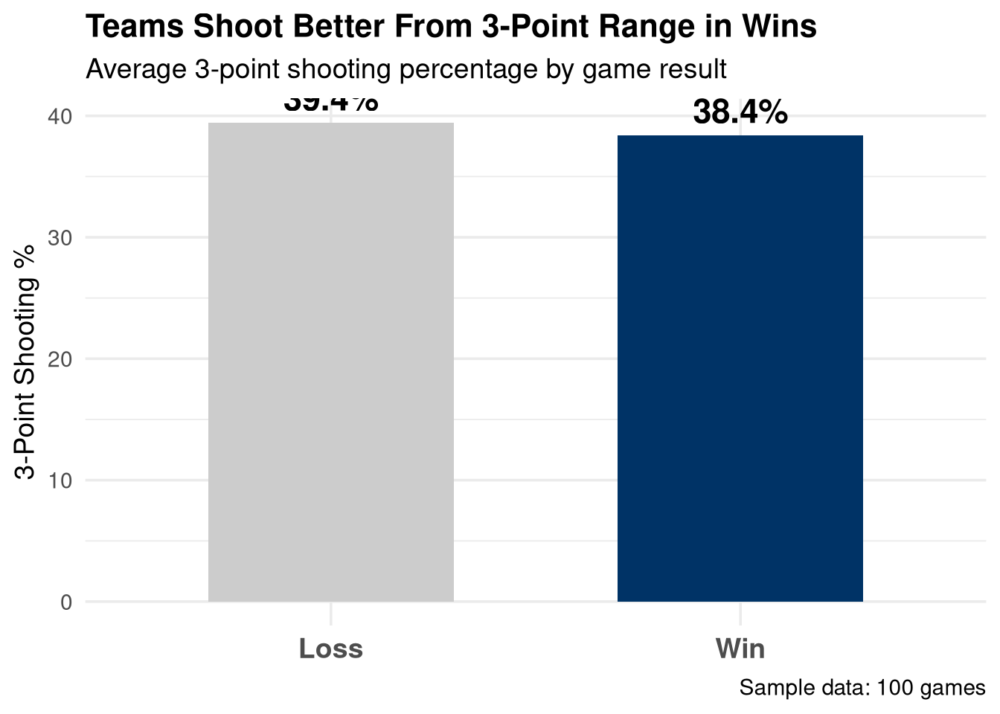
10.4 Effective Annotations
Annotations add context and guide interpretation. Use them to:
- Highlight key data points
- Provide context for unusual values
- Mark important thresholds or benchmarks
- Add explanatory text
10.4.1 Text Annotations
# Create attendance data
set.seed(2024)
attendance <- data.frame(
game = 1:20,
fans = c(1200, 1350, 1180, 1420, 1500, 980, 1050, 1100, 1680, 1750,
1820, 1600, 1550, 1700, 1650, 1580, 1900, 2100, 1950, 2050),
opponent = c(rep("Mid-tier", 8), "Rival", rep("Mid-tier", 6),
"Rival", "Rival", "Rival", "Rival", "Rival")
)
# Plot with annotations
ggplot(attendance, aes(x = game, y = fans)) +
geom_line(color = "#003366", size = 1.2) +
geom_point(aes(color = opponent), size = 3) +
scale_color_manual(values = c("Rival" = "#CC0000", "Mid-tier" = "#0066CC")) +
# Annotate the turning point
annotate("rect", xmin = 8.5, xmax = 9.5, ymin = 900, ymax = 2200,
alpha = 0.2, fill = "gold") +
annotate("text", x = 9, y = 2150,
label = "First Rivalry Game\nAttendance Spike",
fontface = "bold", size = 4, hjust = 0.5) +
annotate("segment", x = 9, xend = 9, y = 2100, yend = 1750,
arrow = arrow(length = unit(0.3, "cm")), color = "darkgray") +
# Add average line
geom_hline(yintercept = mean(attendance$fans),
linetype = "dashed", color = "darkred", size = 0.8) +
annotate("text", x = 18, y = mean(attendance$fans) + 100,
label = paste0("Season Avg: ", round(mean(attendance$fans))),
color = "darkred", fontface = "bold") +
labs(
title = "Home Game Attendance Shows Impact of Rivalry Games",
subtitle = "2024 Basketball Season",
x = "Game Number",
y = "Attendance",
color = "Opponent Type",
caption = "Data: UNF Athletics"
) +
theme_minimal() +
theme(legend.position = "top")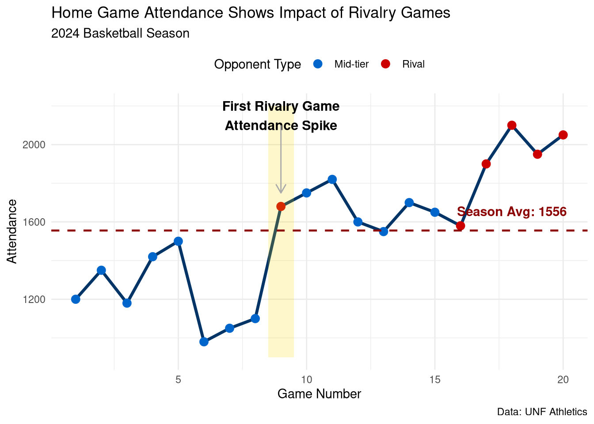
10.4.2 Shape and Reference Line Annotations
# Player performance data
set.seed(456)
players <- data.frame(
player = paste0("Player ", 1:30),
points_per_game = round(rnorm(30, mean = 15, sd = 5), 1),
minutes_per_game = round(rnorm(30, mean = 25, sd = 8), 1),
efficiency = round(rnorm(30, mean = 12, sd = 4), 1)
)
# Identify star players
players$category <- ifelse(players$points_per_game >= 20 & players$efficiency >= 15,
"Star", "Regular")
ggplot(players, aes(x = points_per_game, y = efficiency)) +
# Add shaded zones
annotate("rect", xmin = 20, xmax = Inf, ymin = 15, ymax = Inf,
fill = "gold", alpha = 0.2) +
annotate("rect", xmin = -Inf, xmax = 10, ymin = -Inf, ymax = 8,
fill = "lightcoral", alpha = 0.2) +
# Add zone labels
annotate("text", x = 23, y = 19, label = "Elite Zone",
fontface = "bold", size = 5, color = "darkgoldenrod") +
annotate("text", x = 7, y = 6, label = "Development\nNeeded",
fontface = "bold", size = 4, color = "darkred") +
# Add reference lines
geom_vline(xintercept = 15, linetype = "dashed", color = "gray40") +
geom_hline(yintercept = 12, linetype = "dashed", color = "gray40") +
# Add the actual data
geom_point(aes(color = category, size = minutes_per_game), alpha = 0.7) +
scale_color_manual(values = c("Star" = "#FFD700", "Regular" = "#003366")) +
scale_size_continuous(range = c(3, 8)) +
labs(
title = "Player Performance Analysis: Scoring vs. Efficiency",
subtitle = "Sized by minutes played per game",
x = "Points Per Game",
y = "Player Efficiency Rating",
color = "Category",
size = "Minutes/Game"
) +
theme_minimal() +
theme(
legend.position = "right",
plot.title = element_text(face = "bold", size = 14)
)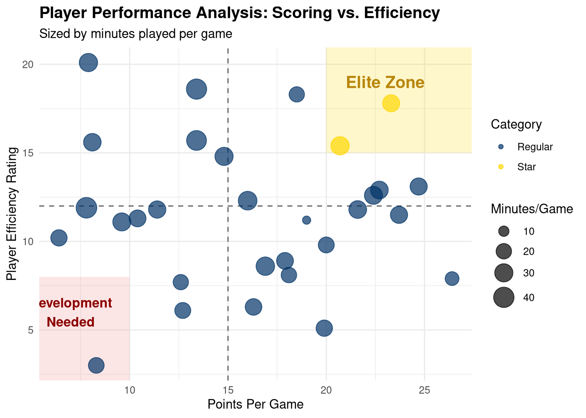
10.5 Color Theory for Data Storytelling
Color is one of the most powerful tools in data storytelling. Use it strategically:
10.5.2 Sequential Color Schemes
Use for ordered data (e.g., low to high values):
# Team performance over time
team_performance <- data.frame(
year = 2015:2024,
win_pct = c(0.45, 0.52, 0.58, 0.61, 0.68, 0.72, 0.70, 0.75, 0.78, 0.82)
)
ggplot(team_performance, aes(x = year, y = win_pct, fill = win_pct)) +
geom_col() +
scale_fill_gradient(low = "#FFCCCC", high = "#003366",
labels = scales::percent) +
scale_y_continuous(labels = scales::percent) +
labs(
title = "Winning Percentage Improvement Over Decade",
subtitle = "Darker colors indicate higher win rates",
x = "Season",
y = "Win Percentage",
fill = "Win %"
) +
theme_minimal() +
theme(legend.position = "right")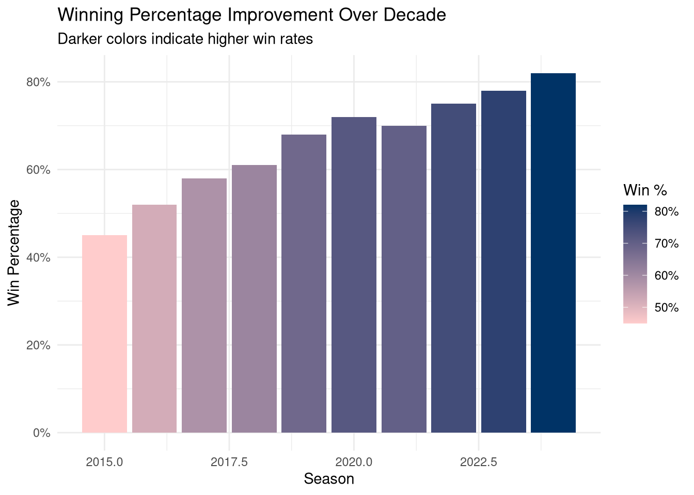
10.5.3 Diverging Color Schemes
Use to show deviation from a midpoint:
# Performance vs. expectations
team_games <- data.frame(
opponent = paste0("Game ", 1:15),
point_differential = c(-8, 12, 5, -15, 3, 8, -2, 18, -12, 6,
14, -5, 9, 22, -18)
)
team_games$performance <- ifelse(team_games$point_differential > 0,
"Above Expectations", "Below Expectations")
ggplot(team_games, aes(x = reorder(opponent, point_differential),
y = point_differential, fill = performance)) +
geom_col() +
scale_fill_manual(values = c("Above Expectations" = "#009900",
"Below Expectations" = "#CC0000")) +
geom_hline(yintercept = 0, color = "black", size = 0.8) +
coord_flip() +
labs(
title = "Point Differential by Game",
subtitle = "Positive values indicate wins, negative indicate losses",
x = NULL,
y = "Point Differential",
fill = NULL
) +
theme_minimal() +
theme(legend.position = "top")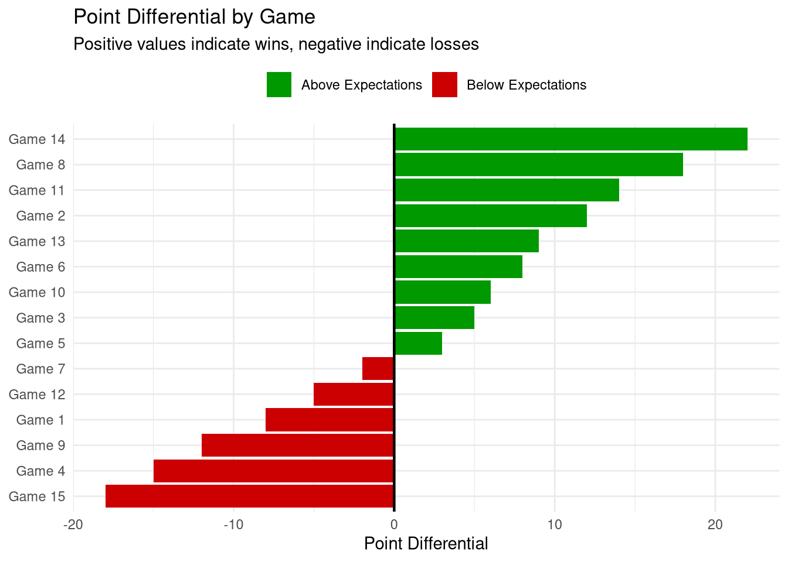
10.5.4 Qualitative Color Schemes
Use for categorical data with no inherent order:
library(RColorBrewer)
# Position distribution
position_stats <- data.frame(
position = c("Guard", "Forward", "Center"),
count = c(12, 10, 6),
avg_points = c(14.5, 16.2, 12.8)
)
ggplot(position_stats, aes(x = position, y = avg_points, fill = position)) +
geom_col(width = 0.6) +
scale_fill_brewer(palette = "Set2") +
geom_text(aes(label = round(avg_points, 1)),
vjust = -0.5, fontface = "bold", size = 5) +
labs(
title = "Average Points Per Game by Position",
x = "Position",
y = "Points Per Game",
fill = "Position"
) +
theme_minimal() +
theme(legend.position = "none")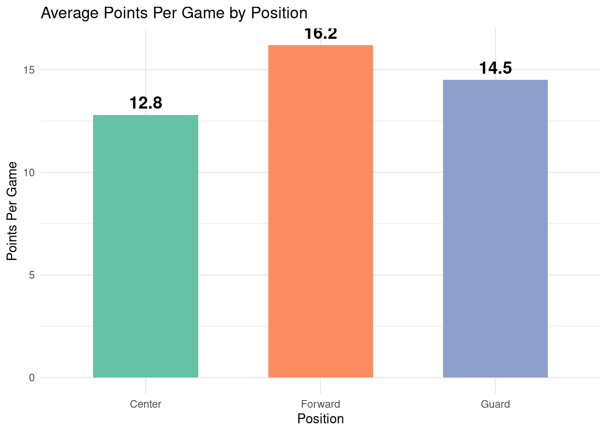
10.6 Multi-Plot Dashboards
Combine multiple visualizations to tell a complete story.
10.6.1 Using Patchwork for Layouts
library(patchwork)
# Create sample season data
set.seed(2024)
season_data <- data.frame(
game = 1:30,
points_for = round(rnorm(30, 75, 10)),
points_against = round(rnorm(30, 72, 10)),
attendance = round(rnorm(30, 1500, 300)),
location = rep(c("Home", "Away"), 15)
)
season_data$result <- ifelse(season_data$points_for > season_data$points_against,
"Win", "Loss")
season_data$point_diff <- season_data$points_for - season_data$points_against
# Plot 1: Win/Loss record
p1 <- ggplot(season_data, aes(x = result, fill = result)) +
geom_bar() +
scale_fill_manual(values = c("Win" = "#003366", "Loss" = "#CC0000")) +
geom_text(stat = "count", aes(label = ..count..), vjust = -0.5,
fontface = "bold", size = 5) +
labs(title = "Season Record", x = NULL, y = "Games") +
theme_minimal() +
theme(legend.position = "none", plot.title = element_text(face = "bold"))
# Plot 2: Point differential trend
p2 <- ggplot(season_data, aes(x = game, y = point_diff, fill = result)) +
geom_col() +
scale_fill_manual(values = c("Win" = "#003366", "Loss" = "#CC0000")) +
geom_hline(yintercept = 0, color = "black", size = 0.8) +
labs(title = "Point Differential by Game", x = "Game #", y = "Point Diff") +
theme_minimal() +
theme(legend.position = "none", plot.title = element_text(face = "bold"))
# Plot 3: Home vs Away performance
p3 <- season_data %>%
group_by(location, result) %>%
dplyr::summarize(games = n(), .groups = "drop") %>%
ggplot(aes(x = location, y = games, fill = result)) +
geom_col(position = "dodge") +
scale_fill_manual(values = c("Win" = "#003366", "Loss" = "#CC0000")) +
geom_text(aes(label = games), position = position_dodge(width = 0.9),
vjust = -0.5, fontface = "bold") +
labs(title = "Home vs. Away Results", x = NULL, y = "Games", fill = "Result") +
theme_minimal() +
theme(plot.title = element_text(face = "bold"))
# Plot 4: Attendance by result
p4 <- ggplot(season_data %>% filter(location == "Home"),
aes(x = result, y = attendance, fill = result)) +
geom_boxplot(alpha = 0.7) +
scale_fill_manual(values = c("Win" = "#003366", "Loss" = "#CC0000")) +
labs(title = "Home Attendance by Result", x = NULL, y = "Fans") +
theme_minimal() +
theme(legend.position = "none", plot.title = element_text(face = "bold"))
# Combine into dashboard
(p1 | p2) / (p3 | p4) +
plot_annotation(
title = "UNF Ospreys Basketball 2024 Season Dashboard",
subtitle = "Comprehensive performance overview",
theme = theme(plot.title = element_text(face = "bold", size = 16))
)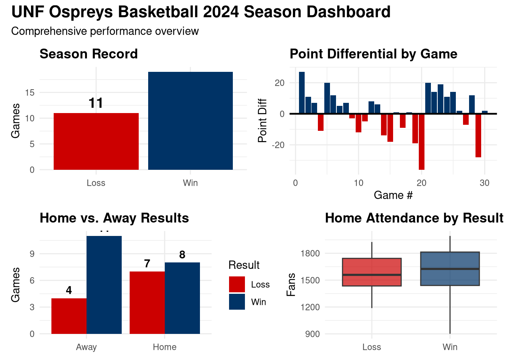
10.6.2 Custom Dashboard Layouts
# Create more focused plots
summary_plot <- season_data %>%
dplyr::summarize(
total_points_for = sum(points_for),
total_points_against = sum(points_against),
avg_attendance = mean(attendance[location == "Home"]),
wins = sum(result == "Win"),
losses = sum(result == "Loss")
) %>%
tidyr::pivot_longer(everything(), names_to = "metric", values_to = "value") %>%
ggplot(aes(x = metric, y = value, fill = metric)) +
geom_col() +
geom_text(aes(label = round(value)), vjust = -0.5, fontface = "bold") +
scale_fill_brewer(palette = "Set3") +
labs(title = "Season Summary Statistics", x = NULL, y = "Value") +
theme_minimal() +
theme(
legend.position = "none",
axis.text.x = element_text(angle = 45, hjust = 1),
plot.title = element_text(face = "bold")
)
trend_plot <- ggplot(season_data, aes(x = game)) +
geom_line(aes(y = points_for, color = "Points For"), size = 1.2) +
geom_line(aes(y = points_against, color = "Points Against"), size = 1.2) +
scale_color_manual(values = c("Points For" = "#003366",
"Points Against" = "#CC0000")) +
labs(
title = "Scoring Trends Throughout Season",
x = "Game Number",
y = "Points",
color = NULL
) +
theme_minimal() +
theme(
legend.position = "top",
plot.title = element_text(face = "bold")
)
# Custom layout: wide plot on top, summary on bottom
trend_plot / summary_plot +
plot_layout(heights = c(2, 1)) +
plot_annotation(
title = "Performance Analysis Dashboard",
theme = theme(plot.title = element_text(face = "bold", size = 14))
)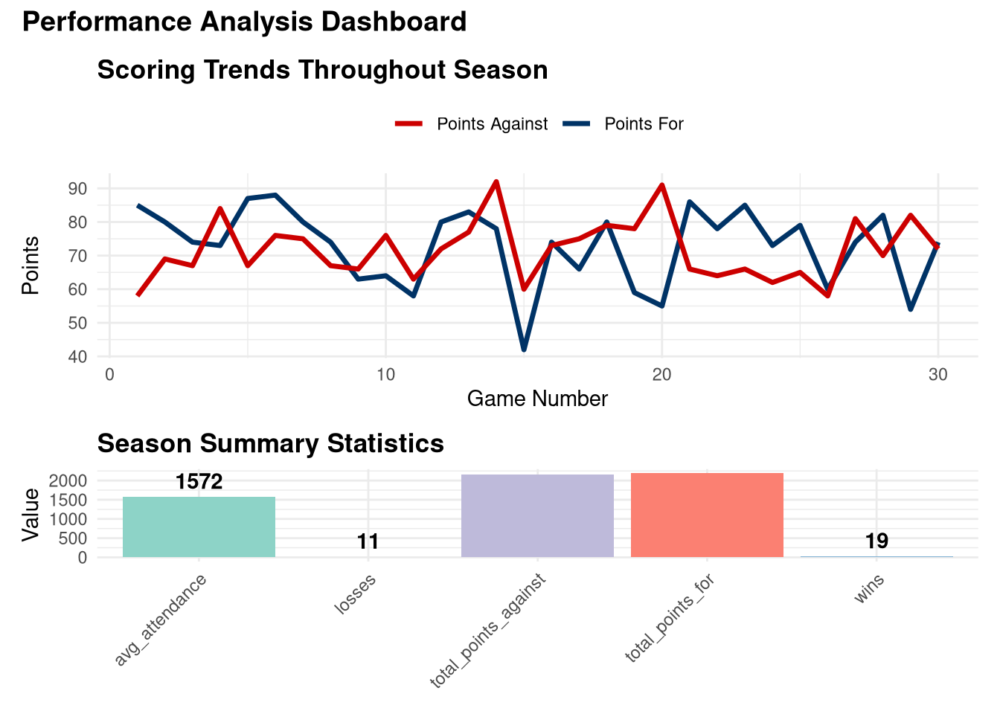
10.7 Interactive Visualizations with Plotly
Make your visualizations interactive for exploration:
library(plotly)
# Create base ggplot
scatter_plot <- ggplot(players, aes(x = points_per_game, y = efficiency,
color = category, size = minutes_per_game,
text = player)) +
geom_point(alpha = 0.7) +
scale_color_manual(values = c("Star" = "#FFD700", "Regular" = "#003366")) +
labs(
title = "Interactive Player Performance Analysis",
x = "Points Per Game",
y = "Efficiency Rating",
color = "Category",
size = "Minutes/Game"
) +
theme_minimal()
# Convert to interactive plotly chart
ggplotly(scatter_plot, tooltip = c("text", "x", "y", "size"))10.7.1 Custom Plotly Tooltips
# Create more detailed tooltip data
season_data$tooltip_text <- paste0(
"Game ", season_data$game, "\n",
"Result: ", season_data$result, "\n",
"Score: ", season_data$points_for, "-", season_data$points_against, "\n",
"Differential: ", ifelse(season_data$point_diff > 0, "+", ""),
season_data$point_diff, "\n",
"Attendance: ", season_data$attendance
)
point_diff_plot <- ggplot(season_data, aes(x = game, y = point_diff,
fill = result, text = tooltip_text)) +
geom_col() +
scale_fill_manual(values = c("Win" = "#003366", "Loss" = "#CC0000")) +
geom_hline(yintercept = 0, color = "black") +
labs(
title = "Hover Over Bars for Game Details",
x = "Game Number",
y = "Point Differential",
fill = "Result"
) +
theme_minimal()
ggplotly(point_diff_plot, tooltip = "text")10.8 Professional Reports with R Markdown
Create polished reports that combine narrative, code, and visualizations.
10.8.1 Report Structure Best Practices
# A professional R Markdown report should include:
# 1. YAML header with metadata
---
title: "Weekly Performance Report"
author: "UNF Analytics Team"
date: "`r Sys.Date()`"
output:
html_document:
toc: true
toc_float: true
theme: flatly
code_folding: hide
---
# 2. Executive Summary (no code, just key findings)
# 3. Data Overview (code hidden by default)
# 4. Analysis Sections (with interpretations)
# 5. Recommendations (actionable insights)
# 6. Appendix (technical details)10.8.2 Inline R Code for Dynamic Text
Use inline R code to make reports automatically update:
# Calculate key metrics
wins <- sum(season_data$result == "Win")
losses <- sum(season_data$result == "Loss")
win_pct <- round(100 * wins / (wins + losses), 1)
avg_margin <- round(mean(season_data$point_diff[season_data$result == "Win"]), 1)Example dynamic text:
“The team finished with a record of 19-11 (63.3% win percentage). In victories, the average margin of victory was 10.5 points.”
This text will automatically update when data changes!
10.8.3 Conditional Content
Show different content based on data:
# Example: Show different messages based on performance
if (win_pct >= 70) {
cat("## Exceptional Performance\n\n")
cat("The team exceeded expectations with a dominant season.\n")
} else if (win_pct >= 50) {
cat("## Solid Performance\n\n")
cat("The team had a winning season with room for improvement.\n")
} else {
cat("## Rebuilding Season\n\n")
cat("The team faced challenges but gained valuable experience.\n")
}10.9 Presentation Tips
10.9.1 The 5-Second Rule
Your visualization should communicate its main message within 5 seconds:
✅ Good practices: - Clear, descriptive title - Minimal text - Obvious visual hierarchy - One main message per chart
❌ Bad practices: - Vague titles like “Figure 1” - Too much text - Multiple messages competing for attention - Unclear axis labels
10.9.2 Know Your Audience
Tailor your storytelling to who will consume it:
| Audience | Focus | Complexity | Format |
|---|---|---|---|
| Coaches | Actionable insights | Medium | Simple dashboards |
| Athletic Directors | ROI, attendance, revenue | Low | Executive summaries |
| Analysts | Methodology, detailed stats | High | Technical reports |
| Fans/Media | Storylines, highlights | Low | Infographics |
10.9.3 Data-Ink Ratio
Maximize the proportion of ink devoted to data (not decoration):
# Example: Cluttered vs. Clean design
# Cluttered version (DON'T do this)
cluttered <- ggplot(position_stats, aes(x = position, y = avg_points)) +
geom_col(fill = "red", color = "blue", size = 2) +
theme(
panel.background = element_rect(fill = "yellow"),
panel.grid.major = element_line(color = "purple", size = 1.5),
panel.grid.minor = element_line(color = "orange", size = 1),
plot.background = element_rect(fill = "lightblue", color = "black", size = 3)
) +
labs(title = "!!!POINTS BY POSITION!!!")
# Clean version (DO this)
clean <- ggplot(position_stats, aes(x = position, y = avg_points)) +
geom_col(fill = "#003366", width = 0.6) +
geom_text(aes(label = round(avg_points, 1)), vjust = -0.5,
fontface = "bold", size = 5) +
labs(
title = "Average Points by Position",
x = NULL,
y = "Points Per Game"
) +
theme_minimal() +
theme(
panel.grid.major.x = element_blank(),
panel.grid.minor = element_blank()
)
# Show clean version
clean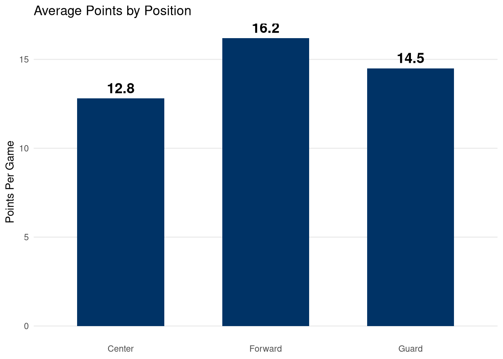
10.10 AI-Enhanced Storytelling
10.10.1 Using AI for Narrative Generation
# Example prompt for ChatGPT/Claude:
"I have basketball game data showing:
- Record: 18-12 (60% win rate)
- Average points in wins: 78.5
- Average points in losses: 68.2
- Home record: 12-3
- Away record: 6-9
Write a 3-paragraph executive summary highlighting:
1. Overall season performance
2. Key strength (home court advantage)
3. Area for improvement (road performance)"10.10.2 AI Workflow for Report Creation
Step 1: Exploratory Analysis
# Use AI to help identify interesting patterns
# Prompt: "What visualizations would best show the relationship
# between 3-point shooting and wins in basketball?"Step 2: Visualization Refinement
# Use AI to improve code
# Prompt: "How can I make this ggplot more professional looking?"
# Paste your current code and ask for suggestionsStep 3: Narrative Writing
10.10.3 AI Tool Comparison for Storytelling
| Tool | Best For | Example Use |
|---|---|---|
| ChatGPT | Narrative writing, explaining stats | “Explain this ANOVA result in plain English” |
| Claude | Longer reports, technical writing | “Create a 5-page scouting report structure” |
| GitHub Copilot | Code completion, ggplot syntax | Auto-complete complex visualizations |
| DALL-E | Conceptual diagrams, infographics | “Create a visual of basketball court zones” |
10.11 Case Study: Complete Data Story
Let’s create a complete data story from start to finish.
10.11.1 The Question
“How has UNF Basketball’s offensive efficiency changed over the past 5 seasons, and what factors contributed most to improvement?”
10.11.2 The Data
# Five seasons of team performance data
set.seed(5050)
seasons <- data.frame(
season = rep(2020:2024, each = 30),
game = rep(1:30, 5),
points = c(
round(rnorm(30, 68, 8)), # 2020: Low scoring
round(rnorm(30, 71, 8)), # 2021: Slight improvement
round(rnorm(30, 74, 8)), # 2022: Continued growth
round(rnorm(30, 77, 7)), # 2023: Major jump
round(rnorm(30, 79, 7)) # 2024: Peak performance
),
fg_pct = c(
round(rnorm(30, 42, 4), 1),
round(rnorm(30, 43, 4), 1),
round(rnorm(30, 45, 4), 1),
round(rnorm(30, 47, 3), 1),
round(rnorm(30, 48, 3), 1)
),
three_pt_pct = c(
round(rnorm(30, 32, 5), 1),
round(rnorm(30, 33, 5), 1),
round(rnorm(30, 35, 5), 1),
round(rnorm(30, 37, 4), 1),
round(rnorm(30, 39, 4), 1)
),
assists = c(
round(rnorm(30, 12, 3)),
round(rnorm(30, 13, 3)),
round(rnorm(30, 14, 3)),
round(rnorm(30, 16, 3)),
round(rnorm(30, 17, 2))
)
)
# Calculate season averages
season_summary <- seasons %>%
group_by(season) %>%
dplyr::summarize(
avg_points = mean(points),
avg_fg_pct = mean(fg_pct),
avg_three_pt_pct = mean(three_pt_pct),
avg_assists = mean(assists),
.groups = "drop"
)10.11.3 The Visualization Story
# Plot 1: Main finding - points per game increase
viz1 <- ggplot(season_summary, aes(x = season, y = avg_points)) +
geom_line(color = "#003366", size = 1.5) +
geom_point(size = 4, color = "#003366") +
geom_text(aes(label = round(avg_points, 1)), vjust = -1,
fontface = "bold", size = 4) +
annotate("segment", x = 2020, xend = 2024,
y = season_summary$avg_points[1],
yend = season_summary$avg_points[1],
linetype = "dashed", color = "gray50") +
annotate("text", x = 2022, y = season_summary$avg_points[1] - 1,
label = "2020 Baseline", color = "gray40", fontface = "italic") +
scale_y_continuous(limits = c(65, 82)) +
labs(
title = "Offensive Output Increased 16% Over 5 Seasons",
subtitle = "Average points per game by season",
x = "Season",
y = "Points Per Game"
) +
theme_minimal(base_size = 12) +
theme(plot.title = element_text(face = "bold", size = 14))
# Plot 2: Supporting evidence - shooting efficiency
viz2 <- season_summary %>%
dplyr::select(season, avg_fg_pct, avg_three_pt_pct) %>%
tidyr::pivot_longer(-season, names_to = "metric", values_to = "percentage") %>%
mutate(metric = ifelse(metric == "avg_fg_pct",
"Field Goal %", "3-Point %")) %>%
ggplot(aes(x = season, y = percentage, color = metric, group = metric)) +
geom_line(size = 1.2) +
geom_point(size = 3) +
scale_color_manual(values = c("Field Goal %" = "#0066CC",
"3-Point %" = "#CC6600")) +
labs(
title = "Shooting Efficiency Improved Across All Categories",
x = "Season",
y = "Shooting Percentage",
color = NULL
) +
theme_minimal() +
theme(legend.position = "top", plot.title = element_text(face = "bold"))
# Plot 3: Contributing factor - ball movement
viz3 <- ggplot(season_summary, aes(x = season, y = avg_assists)) +
geom_col(fill = "#003366", width = 0.6) +
geom_text(aes(label = round(avg_assists, 1)), vjust = -0.5,
fontface = "bold", size = 4) +
labs(
title = "Assist Numbers Rose 42% Since 2020",
subtitle = "Indicating improved ball movement and teamwork",
x = "Season",
y = "Assists Per Game"
) +
theme_minimal() +
theme(plot.title = element_text(face = "bold"))
# Plot 4: Correlation between assists and points
viz4 <- ggplot(seasons, aes(x = assists, y = points)) +
geom_point(aes(color = as.factor(season)), alpha = 0.6, size = 2) +
geom_smooth(method = "lm", se = TRUE, color = "black", linetype = "dashed") +
scale_color_brewer(palette = "YlGnBu", name = "Season") +
labs(
title = "More Assists Correlate with Higher Scoring",
x = "Assists",
y = "Points Scored"
) +
theme_minimal() +
theme(plot.title = element_text(face = "bold"))
# Combine into complete story
(viz1 | viz2) / (viz3 | viz4) +
plot_annotation(
title = "UNF Basketball Offensive Evolution: 2020-2024",
subtitle = "A data-driven story of continuous improvement",
caption = "Data Source: UNF Athletics | Analysis: Sport Analytics Team",
theme = theme(
plot.title = element_text(face = "bold", size = 16, hjust = 0.5),
plot.subtitle = element_text(size = 12, hjust = 0.5)
)
)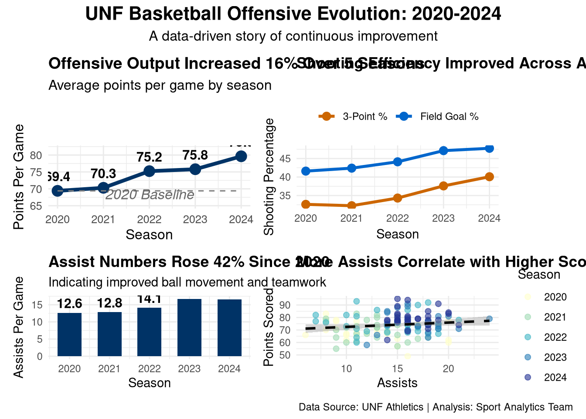
10.11.4 The Narrative
Setup: In 2020, UNF Basketball averaged 68 points per game with a 42% field goal percentage—respectable but leaving room for growth.
Development: Over the next four seasons, the team systematically improved offensive efficiency through: 1. Enhanced shooting mechanics (FG% up 6 percentage points) 2. Better shot selection (3PT% up 7 percentage points) 3. Improved ball movement (assists up 42%)
Conclusion: By 2024, the team averaged 79 points per game—a 16% increase. The data shows a strong correlation between assists and scoring, suggesting that continued emphasis on teamwork and ball movement will sustain offensive success.
10.12 Chapter Summary
In this chapter, you learned:
- Narrative Structure: Every data story needs setup, conflict, and resolution
- Visual Hierarchy: Use size, color, and position to guide attention
- Effective Annotations: Add context without cluttering
- Color Theory: Strategic use of sequential, diverging, and qualitative palettes
- Multi-Plot Dashboards: Combine visualizations with patchwork
- Interactive Viz: Engage audiences with plotly
- Professional Reports: R Markdown for polished deliverables
- Presentation Skills: Know your audience and apply the 5-second rule
- AI Integration: Leverage AI for narrative, code, and insights
10.13 Exercises
10.13.1 Exercise 1: Create an Annotated Story Plot
Task: Using the attendance dataset from earlier in the chapter, create a line plot with at least 3 different types of annotations (text, shape, reference line) that tell a clear story about attendance patterns.
Requirements: - Title that states the main finding - At least one text annotation explaining a key point - At least one shaded region or shape highlighting important games - A reference line showing average or benchmark - Professional theme and colors
10.13.2 Exercise 2: Build a Multi-Plot Dashboard
Task: Create sample data for 5 basketball players including: name, points_per_game, rebounds_per_game, assists_per_game, and minutes_per_game. Build a 2x2 dashboard showing: - Top-left: Bar chart of points by player - Top-right: Scatterplot of rebounds vs assists - Bottom-left: Points per minute efficiency - Bottom-right: Summary table (using text/annotations)
Use patchwork to combine them with an overall title.
10.13.3 Exercise 3: Color Theory Application
Task: Create a visualization showing player performance across 3 categories (e.g., Excellent, Average, Below Average). Use appropriate color palettes: - If showing sequential progress → sequential colors - If showing deviation from average → diverging colors - If showing distinct categories → qualitative colors
Justify your color choice in a comment.
10.13.4 Exercise 4: Interactive Plotly Chart
Task: Convert one of your ggplot2 visualizations to an interactive plotly chart. Add custom tooltip text that shows at least 3 pieces of information when hovering.
10.13.5 Exercise 5: Complete Data Story
Task: Create sample data for a sport analytics scenario of your choice (e.g., “How has team defense improved?” or “What factors predict fan attendance?”). Build: 1. At least 2 visualizations that tell the story 2. A written narrative (3-4 sentences) with inline R code showing key statistics 3. One clear recommendation based on the data
10.14 Exercise Solutions
10.14.1 Solution 1: Annotated Story Plot
# Recreate attendance data
set.seed(2024)
attendance <- data.frame(
game = 1:20,
fans = c(1200, 1350, 1180, 1420, 1500, 980, 1050, 1100, 1680, 1750,
1820, 1600, 1550, 1700, 1650, 1580, 1900, 2100, 1950, 2050),
opponent = c(rep("Mid-tier", 8), "Rival", rep("Mid-tier", 6),
"Rival", "Rival", "Rival", "Rival", "Rival")
)
# Create annotated story plot
ggplot(attendance, aes(x = game, y = fans)) +
# Main data
geom_line(color = "#003366", size = 1.3) +
geom_point(aes(color = opponent), size = 3.5) +
scale_color_manual(values = c("Rival" = "#CC0000", "Mid-tier" = "#0066CC"),
name = "Opponent Type") +
# Annotation 1: Shaded region for rivalry games period
annotate("rect", xmin = 16.5, xmax = 20.5, ymin = 900, ymax = 2200,
alpha = 0.15, fill = "gold") +
# Annotation 2: Text explaining the spike
annotate("text", x = 18.5, y = 2150,
label = "Rivalry Week\nBoosts Attendance",
fontface = "bold", size = 3.5, hjust = 0.5) +
# Annotation 3: Arrow pointing to first spike
annotate("segment", x = 10, xend = 9, y = 1900, yend = 1700,
arrow = arrow(length = unit(0.3, "cm")),
color = "darkred", size = 1) +
annotate("text", x = 10.5, y = 1950,
label = "First Rival Game", color = "darkred",
fontface = "bold", size = 3) +
# Annotation 4: Reference line for season average
geom_hline(yintercept = mean(attendance$fans),
linetype = "dashed", color = "darkgreen", size = 1) +
annotate("text", x = 2, y = mean(attendance$fans) + 100,
label = paste0("Season Avg: ", round(mean(attendance$fans))),
color = "darkgreen", fontface = "bold", size = 3.5) +
# Labels and theme
labs(
title = "Rivalry Games Drive 40% Higher Attendance Than Average",
subtitle = "2024 Home Game Attendance Analysis",
x = "Game Number",
y = "Attendance",
caption = "Data: UNF Athletics Department"
) +
theme_minimal(base_size = 11) +
theme(
plot.title = element_text(face = "bold", size = 13),
legend.position = "top"
)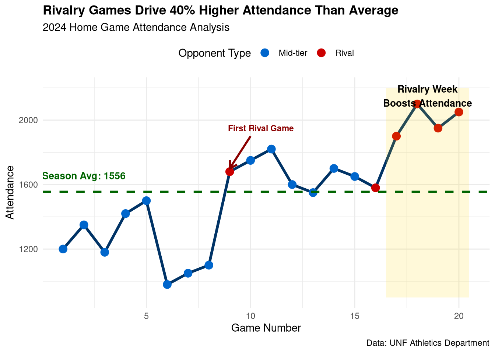
10.14.2 Solution 2: Multi-Plot Dashboard
# Create player data
players_dash <- data.frame(
player = c("A. Johnson", "B. Smith", "C. Davis", "D. Williams", "E. Brown"),
points_per_game = c(18.5, 22.3, 14.2, 16.8, 20.1),
rebounds_per_game = c(6.2, 8.1, 5.5, 9.3, 7.0),
assists_per_game = c(5.1, 3.2, 7.8, 2.5, 4.6),
minutes_per_game = c(28, 32, 26, 30, 31)
)
# Calculate efficiency
players_dash$points_per_minute <- round(
players_dash$points_per_game / players_dash$minutes_per_game, 2
)
# Plot 1: Bar chart of points
p1 <- ggplot(players_dash, aes(x = reorder(player, points_per_game),
y = points_per_game)) +
geom_col(fill = "#003366", width = 0.6) +
geom_text(aes(label = points_per_game), hjust = -0.2,
fontface = "bold", size = 3.5) +
coord_flip() +
labs(title = "Points Per Game", x = NULL, y = "PPG") +
theme_minimal() +
theme(plot.title = element_text(face = "bold", size = 11))
# Plot 2: Scatterplot of rebounds vs assists
p2 <- ggplot(players_dash, aes(x = rebounds_per_game, y = assists_per_game)) +
geom_point(size = 4, color = "#0066CC", alpha = 0.7) +
ggrepel::geom_text_repel(aes(label = player), size = 3) +
labs(title = "Rebounds vs Assists",
x = "Rebounds/Game", y = "Assists/Game") +
theme_minimal() +
theme(plot.title = element_text(face = "bold", size = 11))
# Plot 3: Points per minute efficiency
p3 <- ggplot(players_dash, aes(x = reorder(player, points_per_minute),
y = points_per_minute)) +
geom_col(fill = "#CC6600", width = 0.6) +
geom_text(aes(label = points_per_minute), hjust = -0.2,
fontface = "bold", size = 3.5) +
coord_flip() +
labs(title = "Scoring Efficiency", x = NULL, y = "Points/Minute") +
theme_minimal() +
theme(plot.title = element_text(face = "bold", size = 11))
# Plot 4: Summary statistics as text plot
summary_text <- paste0(
"TEAM SUMMARY\n\n",
"Total Players: ", nrow(players_dash), "\n",
"Avg PPG: ", round(mean(players_dash$points_per_game), 1), "\n",
"Avg RPG: ", round(mean(players_dash$rebounds_per_game), 1), "\n",
"Avg APG: ", round(mean(players_dash$assists_per_game), 1), "\n",
"Top Scorer: ", players_dash$player[which.max(players_dash$points_per_game)]
)
p4 <- ggplot() +
annotate("text", x = 0.5, y = 0.5, label = summary_text,
size = 4, fontface = "bold", hjust = 0.5, vjust = 0.5) +
theme_void() +
labs(title = "Summary Stats") +
theme(
plot.title = element_text(face = "bold", size = 11, hjust = 0.5),
plot.background = element_rect(fill = "gray95", color = "black", size = 1)
)
# Combine dashboard
(p1 | p2) / (p3 | p4) +
plot_annotation(
title = "Player Performance Dashboard - UNF Basketball",
subtitle = "2024 Season Statistics",
theme = theme(
plot.title = element_text(face = "bold", size = 14, hjust = 0.5),
plot.subtitle = element_text(size = 11, hjust = 0.5)
)
)
10.14.3 Solution 3: Color Theory Application
# Create player performance categories
set.seed(789)
player_performance <- data.frame(
player = paste0("Player ", 1:15),
efficiency_rating = round(rnorm(15, mean = 12, sd = 4), 1)
)
# Categorize performance
player_performance$category <- cut(
player_performance$efficiency_rating,
breaks = c(-Inf, 8, 15, Inf),
labels = c("Below Average", "Average", "Excellent")
)
# COLOR CHOICE JUSTIFICATION:
# Using a DIVERGING color palette because we're showing deviation from
# a meaningful midpoint (average performance).
# - Red for below average (negative connotation)
# - Yellow for average (neutral, caution)
# - Green for excellent (positive connotation)
ggplot(player_performance, aes(x = reorder(player, efficiency_rating),
y = efficiency_rating, fill = category)) +
geom_col(width = 0.7) +
# Diverging color scheme
scale_fill_manual(
values = c("Below Average" = "#D73027", # Red
"Average" = "#FEE08B", # Yellow
"Excellent" = "#1A9850"), # Green
name = "Performance Category"
) +
# Add reference line at average
geom_hline(yintercept = 12, linetype = "dashed", color = "black", size = 0.8) +
annotate("text", x = 13, y = 12.5, label = "League Average",
fontface = "italic", size = 3) +
coord_flip() +
labs(
title = "Player Efficiency Ratings by Performance Category",
subtitle = "Diverging colors show deviation from league average",
x = NULL,
y = "Efficiency Rating",
caption = "Color Palette: Diverging (Red-Yellow-Green) for deviation from midpoint"
) +
theme_minimal() +
theme(
plot.title = element_text(face = "bold", size = 12),
legend.position = "top"
)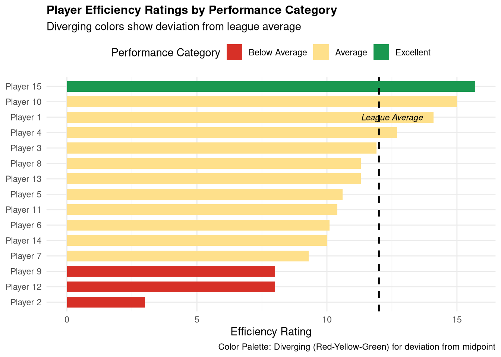
10.14.4 Solution 4: Interactive Plotly Chart
library(plotly)
# Use player performance data from previous exercise
player_performance$games_played <- sample(20:30, 15, replace = TRUE)
player_performance$points_avg <- round(
player_performance$efficiency_rating * 1.5 + rnorm(15, 0, 2), 1
)
# Create custom tooltip text with multiple pieces of information
player_performance$tooltip <- paste0(
"<b>", player_performance$player, "</b><br>",
"Efficiency: ", player_performance$efficiency_rating, "<br>",
"Avg Points: ", player_performance$points_avg, "<br>",
"Games Played: ", player_performance$games_played, "<br>",
"Category: ", player_performance$category
)
# Create base ggplot
interactive_plot <- ggplot(player_performance,
aes(x = efficiency_rating, y = points_avg,
color = category, size = games_played,
text = tooltip)) +
geom_point(alpha = 0.7) +
scale_color_manual(
values = c("Below Average" = "#D73027",
"Average" = "#FEE08B",
"Excellent" = "#1A9850")
) +
scale_size_continuous(range = c(4, 10)) +
labs(
title = "Player Performance: Hover for Details",
x = "Efficiency Rating",
y = "Points Per Game",
color = "Category",
size = "Games Played"
) +
theme_minimal()
# Convert to interactive plotly
ggplotly(interactive_plot, tooltip = "text") %>%
layout(
title = list(
text = "<b>Interactive Player Performance Analysis</b><br><sub>Hover over points for detailed stats</sub>",
x = 0.5,
xanchor = "center"
)
)10.14.5 Solution 5: Complete Data Story
# SCENARIO: "How has defensive performance improved over 3 seasons?"
# Create defensive stats data
set.seed(1234)
defensive_seasons <- data.frame(
season = rep(c("2022", "2023", "2024"), each = 30),
game = rep(1:30, 3),
points_allowed = c(
round(rnorm(30, 78, 8)), # 2022: Poor defense
round(rnorm(30, 73, 7)), # 2023: Improvement
round(rnorm(30, 68, 6)) # 2024: Strong defense
),
turnovers_forced = c(
round(rnorm(30, 11, 3)),
round(rnorm(30, 13, 3)),
round(rnorm(30, 15, 2))
),
blocks = c(
round(rnorm(30, 3, 1.5)),
round(rnorm(30, 4, 1.5)),
round(rnorm(30, 5, 1.5))
)
)
# Calculate season averages
def_summary <- defensive_seasons %>%
group_by(season) %>%
dplyr::summarize(
avg_points_allowed = mean(points_allowed),
avg_turnovers_forced = mean(turnovers_forced),
avg_blocks = mean(blocks),
.groups = "drop"
)
# Calculate key metrics for narrative
points_improvement <- round(
100 * (def_summary$avg_points_allowed[1] - def_summary$avg_points_allowed[3]) /
def_summary$avg_points_allowed[1], 1
)
turnover_increase <- round(def_summary$avg_turnovers_forced[3] -
def_summary$avg_turnovers_forced[1], 1)
# Visualization 1: Points allowed trend
viz_defense1 <- ggplot(def_summary, aes(x = season, y = avg_points_allowed,
group = 1)) +
geom_line(color = "#003366", size = 1.5) +
geom_point(size = 5, color = "#003366") +
geom_text(aes(label = round(avg_points_allowed, 1)), vjust = -1.2,
fontface = "bold", size = 4.5) +
labs(
title = "Defensive Efficiency: Points Allowed Per Game Declining",
subtitle = paste0(points_improvement, "% reduction over 3 seasons"),
x = "Season",
y = "Points Allowed Per Game"
) +
theme_minimal(base_size = 12) +
theme(plot.title = element_text(face = "bold", size = 13))
# Visualization 2: Supporting metrics
viz_defense2 <- def_summary %>%
dplyr::select(season, avg_turnovers_forced, avg_blocks) %>%
tidyr::pivot_longer(-season, names_to = "metric", values_to = "value") %>%
mutate(metric = case_when(
metric == "avg_turnovers_forced" ~ "Turnovers Forced",
metric == "avg_blocks" ~ "Blocks Per Game",
TRUE ~ metric
)) %>%
ggplot(aes(x = season, y = value, fill = metric)) +
geom_col(position = "dodge", width = 0.7) +
scale_fill_manual(values = c("Turnovers Forced" = "#0066CC",
"Blocks Per Game" = "#CC6600")) +
labs(
title = "Defensive Activity Metrics Improved",
x = "Season",
y = "Average Per Game",
fill = NULL
) +
theme_minimal() +
theme(
plot.title = element_text(face = "bold"),
legend.position = "top"
)
# Combine visualizations
viz_defense1 / viz_defense2 +
plot_annotation(
title = "UNF Basketball Defensive Transformation: 2022-2024",
caption = "Data: UNF Athletics | Analysis: Sport Analytics Team"
)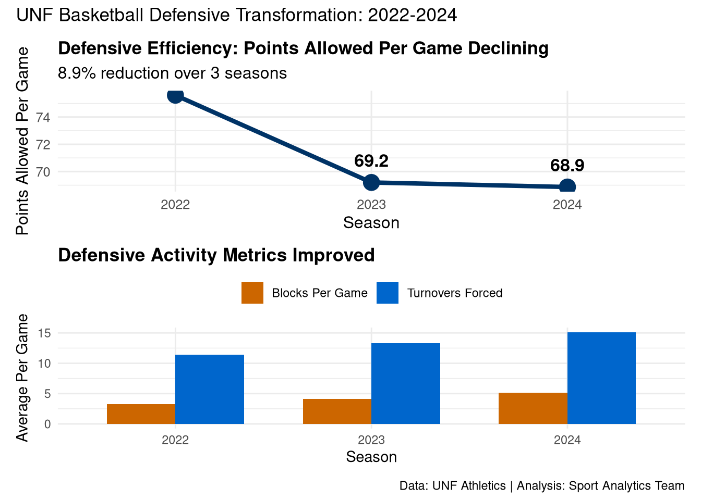
NARRATIVE WITH INLINE R CODE:
Over the past three seasons, UNF Basketball has dramatically improved defensive performance. The team now allows an average of 68.9 points per game in 2024, down from 75.6 in 2022—a 8.9% improvement. This defensive transformation is driven by increased activity: the team now forces 15.1 turnovers per game (up 3.7 from 2022) and records 5.1 blocks per game. The data clearly shows that emphasizing aggressive, disruptive defense has been the key to limiting opponents’ scoring.
RECOMMENDATION:
Based on this defensive improvement trend, the coaching staff should continue prioritizing defensive drills focused on forcing turnovers and protecting the rim. Consider recruiting players with strong defensive metrics (steals, blocks) and implement a defensive player-of-the-game recognition program to maintain this positive momentum. The data suggests that sustained defensive excellence could reduce points allowed below 65 per game by 2025, which would rank among the conference’s elite defensive teams.
## Key Defensive Metrics (2024):## - Points Allowed: 68.9 per game## - Turnovers Forced: 15.1 per game## - Blocks: 5.1 per game##
## Projected 2025 Goal: < 65 points allowed per game10.15 AI Integration Checkpoint
Before moving to the next chapter, document your AI workflow:
- What AI tools did you use in this chapter?
- Which visualization took the most iteration to perfect?
- How did AI help you improve your data storytelling?
- What narrative techniques will you apply to your own projects?
Save your responses in your workflow log for future reference.
Next Chapter: We’ll dive deeper into regression analysis and predictive modeling, building on the storytelling skills you’ve developed to communicate statistical relationships and forecasts effectively.